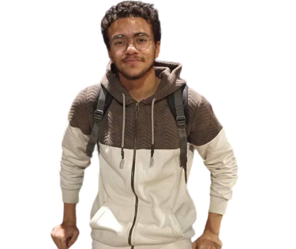

2002-2023
"Strength doesn't come from what you can do. It comes from overcoming the things you once thought you couldn't."
Your ability to stay focused and work tirelessly towards your objectives is truly impressive. You refuse to give up when faced with challenges, and instead, you dig deeper and push harder until you find a solution. This shows that you are not afraid of hard work and are willing to put in the effort necessary to succeed.